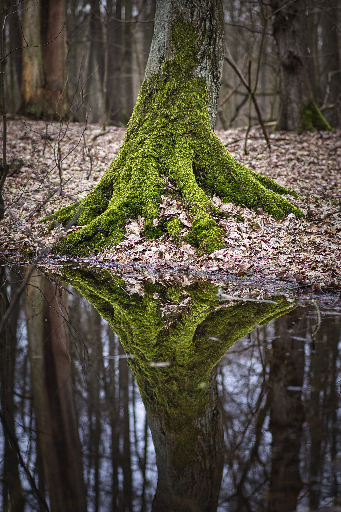

🌴
Bosque tropical
Cálido y húmedo todo el año. Alberga la mayor biodiversidad del planeta, como la Amazonía o el Congo.
Los bosques cubren casi un tercio de la tierra firme, regulan el clima, filtran el agua y dan hogar a la mayor parte de las especies terrestres. Conocerlos es el primer paso para cuidarlos.
Explorar bosques
El clima, la latitud y la altitud dan forma a bosques muy distintos entre sí. Estos son algunos de los principales.
Cálido y húmedo todo el año. Alberga la mayor biodiversidad del planeta, como la Amazonía o el Congo.
Estaciones marcadas y árboles caducifolios como robles, hayas y castaños que pierden la hoja en otoño.
El bioma forestal más extenso. Coníferas resistentes al frío que cubren Canadá, Escandinavia y Siberia.
Veranos secos e inviernos suaves. Encinas, alcornoques y pinos adaptados a la sequía y al fuego.
Datos aproximados que muestran su enorme importancia.
Pequeños gestos cotidianos suman mucho.
“El mejor momento para plantar un árbol fue hace veinte años. El segundo mejor momento es ahora.” — Proverbio popular